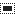

A ferramenta de seleção retangular é projetada para selecionar regiões retangulares da camada ativa: é a mais básica das ferramentas de seleção, mas muito comumente utilizada. Para obter informações sobre as seleções e como elas são usadas no GIMP veja, Seleções para obter informações sobre as características comuns a todas as ferramentas de seleção veja Ferramentas de seleção.
Esta ferramenta também é utilizada para a desenhar um retângulo em uma imagem. Para renderizar um retângulo preenchido, crie uma seleção retangular, e, em seguida, preencha-o usando a ferramenta de Preenchimento. Para criar um contorno retangular, a abordagem mais simples e mais flexível é criar uma seleção retangular e, em seguida, contorná-la.
There are different possibilities to activate the tool:
-
a partir da barra menu → → ,
-
Ao clicar no ícone da ferramenta:

na caixa de ferramentas, -
By pressing the R keyboard shortcut.
![[Nota]](images/note.png)
|
Nota |
|---|---|
|
Veja Ferramentas de Seleção para obter ajuda com teclas modificadoras que afetam todas essas ferramentas da mesma forma. Apenas as opções que são específicas para esta ferramenta são explicadas aqui. |
- Ctrl
-
Pressionar a tecla Ctrl após o início da sua seleção, e segura-la pressionada até você terminar, faz com que o ponto de partida seja usado como o centro do retângulo selecionado, em vez de um canto. Note que, se você pressionar a tecla Ctrl antes de começar a fazer a seleção, a seleção resultante será subtraída da seleção existente. O cursor se transforma no símbolo

- Shift
-
Se você pressionar a tecla Shift antes de iniciar a seleção, a seleção resultante será adicionada à já existente. O cursor se transforma

Pressionar a tecla Shift depois de começar sua seleção, inverte a opção fixa, e mantendo-a pressionada, vai restringir a seleção a um quadrado, se é sua primeira seleção. Se estiver alterando uma seleção, e no menu fixa estiver selecionada a opção Proporção, sua alteração irá respeitar a proporção da seleção anterior.
- Ctrl+Shift
-
Pressionar ambas as teclas depois de iniciar sua seleção combina os dois efeitos, dando-lhe uma seleção quadrada centrada no ponto inicial. Repare que pressionar essas teclas antes de iniciar a sua seleção cria uma intersecção da seleção resultante com a existente e o ponteiro do mouse se modifica de acordo:


Quando esta ferramenta é selecionada, o ponteiro do mouse é exibido assim:  assim que ele estiver sobre a imagem. Um arrastar e soltar permite obter uma forma retangular (ou quadrada). Quando você soltar o botão do mouse, uma linha pontilhada (“formigas marchando”) define a seleção. Não é necessário ajustar a seleção com cuidado, você pode redimensioná-la depois facilmente.
assim que ele estiver sobre a imagem. Um arrastar e soltar permite obter uma forma retangular (ou quadrada). Quando você soltar o botão do mouse, uma linha pontilhada (“formigas marchando”) define a seleção. Não é necessário ajustar a seleção com cuidado, você pode redimensioná-la depois facilmente.
Quando o ponteiro está se movendo na tela, os aspectos do ponteiro de seleção modificam:
- fora da seleção que parece anteriormente, permite criar uma nova seleção, mas irá apagar a existente se esta não for combinada com uma tecla modificadora para adicionar ou subtrair outra seleção conforme descrito acima.
- Na seleção, em suas partes periféricas, o ponteiro do mouse se transforma em várias formas quando passa por cima das áreas retangulares sensíveis e claramente marcadas. Esses identificadores permitem que você redimensione a seleção. Nos cantos de seleção o ponteiro modifica a forma de acordo com o contexto, por exemplo, no canto direito abaixo torna-se:  . Então, clicando e arrastando estas áreas, você pode ampliar ou diminuir o tamanho da seleção. Sobre as partes medianas das bordas da seleção, sejam laterais, abaixo ou acima, o ponteiro modifica sua forma apropriadamente de acordo com o contexto. Por exemplo, quando o ponteiro do mouse está sobre o meio do lado direito, o ponteiro parece:
. Então, clicando e arrastando estas áreas, você pode ampliar ou diminuir o tamanho da seleção. Sobre as partes medianas das bordas da seleção, sejam laterais, abaixo ou acima, o ponteiro modifica sua forma apropriadamente de acordo com o contexto. Por exemplo, quando o ponteiro do mouse está sobre o meio do lado direito, o ponteiro parece:  . Então você pode clicar e arrastar para ampliar ou diminuir o tamanho da seleção movendo o limite escolhido.
. Então você pode clicar e arrastar para ampliar ou diminuir o tamanho da seleção movendo o limite escolhido.
- No interior da area central da seleção o ponteiro do mouse parece o usual para manipulação de objetos, ou seja:  . Então você pode mover toda a seleção clicando e arrastando.
. Então você pode mover toda a seleção clicando e arrastando.
Além disso, se você não tiver desmarcado a opção Destaque, o seu trabalho será mais fácil, porque o que está fora da seleção será mais escuro do que o que está na seleção, e então a seleção aparece destacada.
![[Dica]](images/tip.png)
|
Dica |
|---|---|
|
Se você usar as setas do teclado você pode mover a seleção ou modificar seu tamanho com passo de um pixel. Se você usá-las em combinação com Shift você pode movê-la em passos de 25 pixels. |
Figura 14.7. Áreas sensíveis da seleção

Exibição de todos os ponteiros possíveis em função de sua localização em relação à área da seleção
Depois de criar e modificar a seleção, você vai ter que sair deste modo de edição (e fixar todas as mudanças). Você pode fazer isso com um único clique dentro da seleção ou pressionando a tecla Enter. Ou você pode simplesmente usar uma ferramenta que não seja de seleção e, por exemplo, preencher ou pintar a seleção.
Normally, tool options are displayed in a window attached under the Toolbox as soon as you activate a tool. If they are not, you can access them from the main menu through → → which opens the option window of the selected tool. The available tool options can also be accessed by double clicking the corresponding tool icon in the Toolbox.
- Modo, Anti-serrilhamento, Enevoar bordas
-
Nota Veja Ferramentas de Seleção para obter ajuda com opções que são comuns a todas essas ferramentas. Apenas as opções que são específicas para esta ferramenta são explicadas aqui.
- Cantos arredondados
-
Se você ativar esta opção, aparece um controle deslizante. Você pode usar isso para ajustar o raio que é usado para arredondar os cantos da seleção.
- Expandir a partir do centro
-
Se você ativar esta opção, a seleção é iniciada pressionando o botão do mouse que é usado como centro da área selecionada.
- Fixa
-
Este menu permite-lhe a opção de restringir a forma do retângulo de várias maneiras.
- Proporção
-
Esta opção permite que você crie e redimensione a seleção, mantendo a proporção fixa conforme descrita na caixa de entrada logo abaixo: você pode escrever a proporção lá e apertar Enter. Por padrão, a proporção é de 1:1 (portanto, temos um quadrado) mas ela pode ser alterada. Com os dois pequenos botões de paisagem e de imagens ícones, você pode inverter essa relação.
- Largura
-
Com esta opção você pode manter fixa a largura da seleção.
- Altura
-
Com esta opção você pode fixar a altura da seleção.
- Tamanho
-
Com esta opção você pode manter fixas a altura e a largura da seleção: a ferramenta passa simplesmente a “Carimbar” retângulos do mesmo tamanho.
- Posição
-
Estes dois campos de texto contém as coordenadas horizontais e verticais atuais do canto superior esquerdo da seleção. Você pode usar esses campos para ajustar a posição de seleção com precisão.
- Tamanho
-
Estes dois campos de texto contém a altura e a largura da seleção. Você pode usar esses campos para ajustar o tamanho da seleção com precisão.
- Destaque
-
Se você ativar esta opção, a área selecionada é realçada com uma máscara em torno para tornar a seleção visual muito mais fácil.
- Guias
-
Com este menu, você pode selecionar o tipo de guias que são mostradas dentro da seleção para tornar a criação de uma seleção mais fácil, respeitando regras de composição fotográficas.
Seis opções estão disponíveis:
-
Sem Guias
-
Linha central
-
Regra dos terços
-
Regra de quintos
-
Seções áureas
-
Linhas diagonais
-
- Encolher automaticamente
-
A caixa Encolher automaticamente a seleção fará a redução automatica da seleção até o formato retangular disponível mais próximo na camada de imagem. O algoritmo para encontrar a melhor retângulo para encolher é inteligente, o que neste caso significa que às vezes faz coisas surpreendentemente sofisticadas, e às vezes faz coisas surpreendentemente estranhas. Em qualquer caso, se a região que você deseja selecionar tem um limite de cor sólida, a redução automática sempre a achará corretamente. Note-se que a seleção resultante não precisa ter a mesma forma ou proporção que a que foi encolhida.
Figura 14.9. Encolher automaticamente

Image with two distinct elements selected

Encolher automaticamente
- Amostragem combinada
-
Se Amostragem combinada também estiver ativa, a função de Encolher automaticamente irá utilizar a informação de pixels da tela visível da imagem, ao invés de apenas a camada ativa. Para mais informações sobre Amostra combinada, consulte a expressão no glossário, em Amostra Combinada.
For more information, see the Glossary entry.